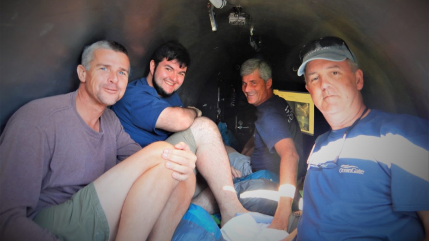

SUBMARINO IMPLODE E DEIXA VÍTIMAS
Chegar bem perto dos destroços do Titanic era o objetivo de uma expedição que prometia experiências inesquecíveis, mas terminou de forma trágica. Um submersível é um veículo pequeno projetado para operar debaixo d’água. Com cinco pessoas a bordo, o Titan sofreu uma implosão catastrófica, de acordo com a Guarda Costeira americana. Todos os passageiros morreram. Mas o que será que pode ter provocado esse processo?
Inicialmente, nós vimos algo que parecia ser a parte externa da cabine de pressão. Encontramos a parte frontal e traseira da cabine de pressão. Depois, encontramos uma segunda área de destroços próxima da região, onde havia outro pedaço do casco da cabine de pressão. Isso nos leva a pensar que ela foi realmente destruída, afirmou um porta-voz da Guarda Costeira.
NEYMAR TRAI ESPOSA GRÁVIDA

Em junho de 2023, Neymar enfrentou mais uma polêmica de traição em meio a gravidez da namorada. Após a repercussão, o atleta assumiu a infidelidade com outra influenciadora e fez uma carta aberta à amada. Duas semanas depois, em junho, eles fizeram chá revelação e descobriram que serão pais de uma menina, Mavie.

"Atingiu a sua intimidade em um momento tão especial que é a maternidade. Bru, já te pedi perdão pelos meus erros, pela exposição desnecessária, mas me sinto na obrigação de vir publicamente reafirmar isso. Se um assunto privado se tornou público, o pedido de perdão tem que ser público. Não me imagino sem você."
CHAT GPT E A EVOLUÇÃO DA TECNOLOGIA
ChatGPT é um chatbot online de inteligência artificial desenvolvido pela OpenAI, lançado em novembro de 2022. O nome "ChatGPT" combina "Chat", referindo-se à sua funcionalidade de chatbot, e "GPT", que significa Generative Pre-trained Transformer, um tipo de modelo de linguagem grande.
Mesmo em suas versões iniciais, ele cria textos, artigos analíticos, redações informais, piadas, histórias infantis. A tecnologia por trás também cria desenhos, gráficos, layouts etc. Cria imagens, designs, anúncios etc. Assim, como em toda revolução, os sons dos discursos apocalípticos nos tomam. Final dos tempos. Desemprego em massa, substituição da mão de obra humana pelas máquinas, agora também nas áreas da criação onde nossa sobrevivência parecia estar assegurada.